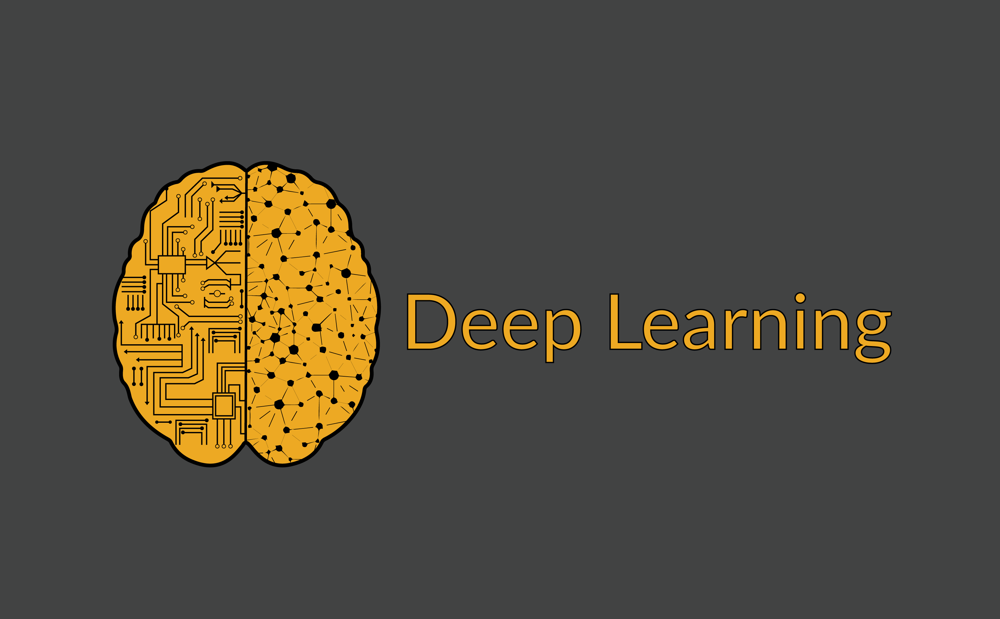

第一章 引言
1.1 机器学习问题类型
-
监督学习：从带标签的数据中学习，预测新数据的标签
-
回归：目标是预测一个连续的数值输出。即，模型需要学习输入特征与连续数值之间的映射关系。
-
应用场景：
- 房价预测：根据房屋的面积、房间数量、地理位置等特征，预测房屋的价格。
- 股票价格预测：根据历史股票价格和相关经济指标，预测未来股票价格走势。
- 天气预测：根据历史天气数据和当前的气象条件，预测未来的温度或降水量。
-
应用场景：
-
分类：目标是将输入数据分配到离散的类别中。即预测分类
-
应用场景：
- 垃圾邮件检测：根据邮件的内容、发件人等特征，将邮件分为垃圾邮件或正常邮件。
- 疾病诊断：通过分析病人的医疗记录和检测结果，预测患某种疾病的风险。
- 图像分类：通过训练卷积神经网络（CNN），可以实现对猫狗图片的分类。
-
应用场景：
-
标记问题：是一种分类任务，其中每个样本可以同时属于多个类别。与传统的二分类或多分类问题不同，标记问题允许多个标签同时存在。
-
应用场景：
- 图像识别：一张图片中可能包含多个物体，如猫、狗、树等，每个物体都可以是一个标签。
- 文本分类：一篇新闻文章可能同时属于多个类别，如“政治”、“经济”、“科技”等。
-
应用场景：
-
搜索：搜索问题涉及从大量数据中找到与用户查询最相关的项。这通常涉及到对数据进行排序，以便用户能够快速找到所需信息。
-
应用场景：
- 网络搜索：用户输入查询，搜索引擎返回与查询最相关的网页列表。
- 推荐系统：在推荐系统中，搜索问题可以用于从大量物品中找到与用户兴趣最匹配的物品。
-
应用场景：
-
推荐系统：推荐系统的目标是根据用户的历史行为和偏好，向用户推荐他们可能感兴趣的新内容或产品。
-
应用场景：
- 电影推荐：根据用户的历史评分和观看记录，推荐用户可能喜欢的电影。
- 商品推荐：电商平台根据用户的购买历史和浏览记录，推荐用户可能感兴趣的商品。
-
应用场景：
-
序列学习：序列学习涉及处理输入和输出都是序列的数据，或者输入和输出的长度是可变的。这类问题通常需要模型能够记住和利用序列中的上下文信息。
-
应用场景：
- 机器翻译：将一种语言的文本翻译成另一种语言的文本。
- 语音识别：将语音信号转换为文本。
- 文本生成：根据给定的提示生成文本，如聊天机器人、文章生成等。
-
应用场景：
-
回归：目标是预测一个连续的数值输出。即，模型需要学习输入特征与连续数值之间的映射关系。
-
无监督学习：从无标签的数据中学习，发现数据的结构和模式，如聚类和主成分分析。
- 聚类（clustering）问题：没有标签的情况下，我们是否能给数据分类呢？
- 主成分分析（principal component analysis）问题：我们能否找到少量的参数来准确地捕捉数据的线性相关属性？比如，一个球的运动轨迹可以用球的速度、直径和质量来描述
- 因果关系（causality）和概率图模型（probabilistic graphical models）问题：我们能否描述观察到的许多数据的根本原因？例如，如果我们有关于房价、污染、犯罪、地理位置、教育和工资的人口统计数据，我们能否简单地根据经验数据发现它们之间的关系？
- 生成对抗性网络（generative adversarial networks）：为我们提供一种合成数据的方法，甚至像图像和音频这样复杂的非结构化数据。
- 强化学习：智能体与环境交互，通过试错来学习最优策略，应用于机器人控制、游戏等。
第二章 预备知识
数据操作
| 生成 x = torch.arange(12) |
tensor([0, 1, 2, 3, 4, 5, 6, 7, 8, 9, 10, 11]) |
| torch.zeros(2, 3, 4) | tensor([[[0., 0., 0., 0.], [0., 0., 0., 0.], [0., 0., 0., 0.]], [[0., 0., 0., 0.], [0., 0., 0., 0.], [0., 0., 0., 0.]]]) |
| torch.ones(2, 3, 4) | 类似zeros，全为1 |
| torch.randn(3, 4) | 随机生成符合均值0方差1的正态分布 |
| torch.tensor([[1, 2, 4, 3], [1, 2, 3, 4], [4, 3, 2, 1]]) | 自定义张量 |
形状
| x.shape | torch.Size([12]) |
| x.numel() | 12 |
| x.reshape(3, 4) | 变为三行四列 tensor([[ 0, 1, 2, 3], [ 4, 5, 6, 7], [ 8, 9, 10, 11]]) |
| torch.cat((X, Y), dim=0) | 沿轴0连接两个张量 |
tensor形状：最高维对应最外面的括号
dim:轴，轴0为最高维，轴1次高维
运算
| + | 按元素加 |
| - | 按元素减 |
| * | 按元素乘 |
| / | 按元素除 |
| ** | 按元素幂 |
| torch.exp(x) | 按元素ex |
| == | 按元素判断相等 |
| X.sum() | 求和，得到张量，例如tensor(66.) |
广播机制：形状不同但是可以按元素操作
机制：以复制元素扩展，使两张量同形状再进行按元素操作
第三章 线性神经网络
3.1 预备知识
3.2 线性回归
线性回归是一种基本的监督学习算法，用于预测连续的数值输出。它假设输入特征与输出之间存在线性关系，通过学习最佳的权重和偏置参数来建立预测模型。
3.3 softmax回归
Softmax回归是一种多分类算法，它将线性回归的输出转换为概率分布，用于处理多分类问题。它通过softmax函数将线性层的输出转换为介于0和1之间的概率值，且所有类别的概率之和为1。
3.4 迭代器
在处理大规模数据时，迭代器不需要一次性将所有数据加载到内存中。它会根据需要逐个获取元素，这在处理大数据集时可以节省大量内存。
迭代器的核心功能是按照一定顺序逐个访问元素。每次调用 __next__() 方法，它就会返回下一个元素，直至迭代结束。
迭代器本身并不存储数据，它只是提供了一种访问数据的方式。迭代器背后的数据可以存储在各种数据结构中，如列表、文件、数据库等。迭代器通过某种机制（如索引、指针等）来定位和获取数据。